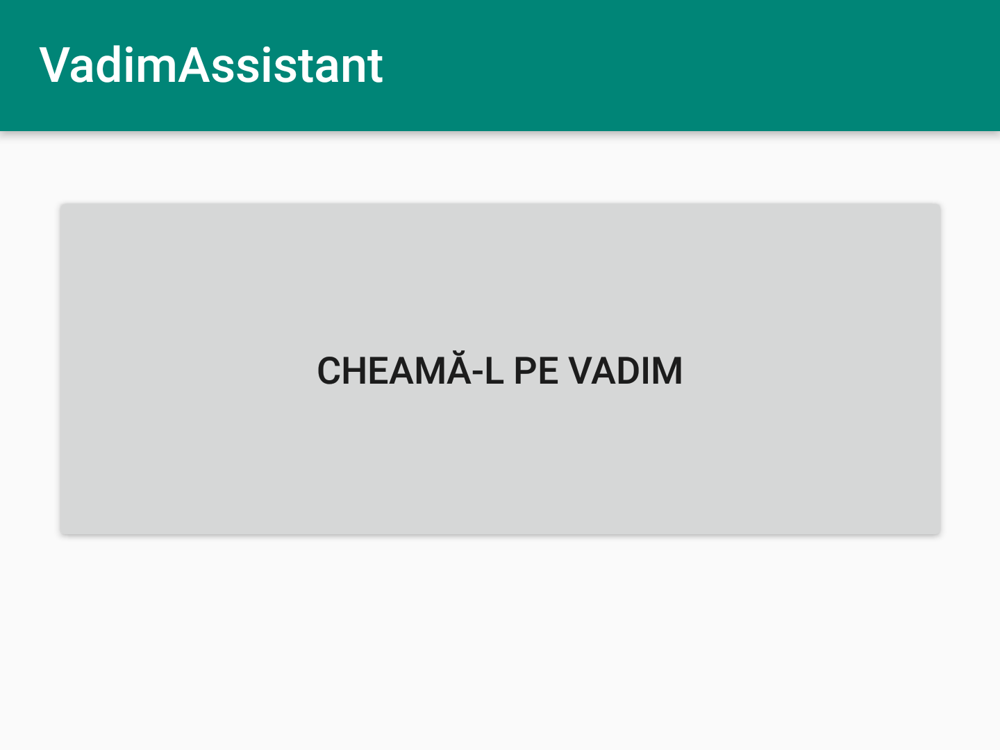

VadimAssistant
A real solution for protecting your office
How does it work?
-
A ferocious stare.
Vadim Tudor is very well known for having a very ferocious look.
-
A stunning shout.
Nothing is more intimidating than Vadim's angry shouts. No unwanted visitor will stay in your office afther hearing the tribune.
All this power at the press of a button
Just install the app on your phone and all of Vadim's power is at your fingertips.
